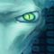

40 jours — 15
Fichiers conservés de la collection Metaflash.
Ouvrir l’imageFichiers conservés
40jours/15.jpg

Informations du fichier
- Nom conservé
- 45d1461cdd57e51a2e3b90e48fb29c1e4bdc843407fceceafec4d5f50131269c.jpg
- Taille
- 1,525 octets
- SHA-256
- 45d1461cdd57e51a2e3b90e48fb29c1e4bdc843407fceceafec4d5f50131269c
Provenance dans la sauvegarde Metaflash :
- 40jours/15.jpg (45d1461cdd57e51a2e3b90e48fb29c1e4bdc843407fceceafec4d5f50131269c)
40jours/15c.jpg

Informations du fichier
- Nom conservé
- 9d85e9ceb00b2867e4ca1d1bc049e5788f084450d83388bf9ad6da1ec1e6e6b3.jpg
- Taille
- 3,574 octets
- SHA-256
- 9d85e9ceb00b2867e4ca1d1bc049e5788f084450d83388bf9ad6da1ec1e6e6b3
Provenance dans la sauvegarde Metaflash :
- 40jours/15c.jpg (9d85e9ceb00b2867e4ca1d1bc049e5788f084450d83388bf9ad6da1ec1e6e6b3)
40jours/15d.jpg


Informations du fichier
- Nom conservé
- 3fc9188c27f4e1a1fedadbc1474bd62937d26f53867a3edf59bc102194d28ccf.jpg
- Taille
- 3,054 octets
- SHA-256
- 3fc9188c27f4e1a1fedadbc1474bd62937d26f53867a3edf59bc102194d28ccf
Provenance dans la sauvegarde Metaflash :
- 40jours/15d.jpg (3fc9188c27f4e1a1fedadbc1474bd62937d26f53867a3edf59bc102194d28ccf)